第1組 · 文稿
第1組 · 文稿1｜隱藏在冰山下的隱憂—當圓融成為一種文化
在產業快速變動與AI技術迅速發展的時代，各產業皆面臨人才培育、留任與人力配置的挑戰，即便是被大眾奉為「鐵飯碗」的國營、泛國營企業也不例外。中鋼被多數人視為南部首屈一指的幸福企業，在過往招考時也總是吸引眾多人才前來應試。然近年因受到全球鋼鐵市場變化、國際貿易情勢、碳稅制度與通膨等因素影響，鋼鐵產業的經營也面臨嚴峻的考驗，讓許多人心中悄悄埋下不安的種子，甚至果斷退出，往高科技產業發展。然而，表面上看似是因為產業薪資結構失衡所造成的人才流失，背後可能還潛藏著更深層的隱憂。
相對穩定的工作環境與薪資制度，一直是中鋼吸引人才的重要優勢。然而，當組織長期處於高度穩定的環境，也可能衍生另一種值得關注的現象：中鋼組織階層分明、專業分工細緻，多數同仁只要完成職責範圍內的工作，便能獲得相對合理的報酬；當面對主管額外交辦的任務、新增業務，或跨越既有分工的工作時，部分同仁可能因職責界線、工作負荷或既有習慣，而傾向避免承擔。當少數同仁願意主動承擔、勇於當責、持續改善工作方式時，這樣的積極表現有時未必能獲得正向回饋，甚至可能因為打破既有工作模式，而受到他人異樣的眼光或無形壓力。
孔子說：「鄉愿，德之賊也。」當組織文化逐漸形成安於現狀、避免改變的氛圍時，那些願意主動承擔、努力解決問題的同仁，反而可能漸漸被視為異類，久而久之，組織中便可能形成劣幣驅逐良幣的現象。當積極任事逐漸被解讀為「內捲」，甚至成為勸阻他人投入的理由時，原本應該受到鼓勵的積極性，反而可能被貼上負面標籤。久而久之，部分有志者因長期受到無形壓力，心中產生沉重的負擔，逐漸降低投入，甚至選擇隨波逐流；而仍不願放棄原則者，則得在缺乏支持的情況下長期獨自奮鬥，最終筋疲力盡，甚至選擇離開、另覓發展。如此循環下來，不僅延攬人才有困難，也可能讓更多願意投入的同仁逐漸降低工作的熱忱。
面對這潛藏在冰山下的隱憂，管理者扮演著關鍵的制衡角色。《孫子兵法》提到：「將有五危：必死，可殺也；必生，可虜也；忿速，可侮也；廉潔，可辱也；愛民，可煩也。凡此五者，將之過也，用兵之災也。」愛護部屬本身並沒有錯，但若將「圓融」置於公平與原則之上，管理者便可能因人情壓力而難以做出必要的管理決策。若領導者為了維持表面的和諧，而對工作表現怠慢的情形缺乏適當的提醒與管理，或對積極任事的同仁所承受的外在壓力缺乏關注，久而久之，反而可能讓組織中的失衡現象持續存在，表面上看起來一團和氣的氛圍，實則潛藏著人才流失的隱性風險。
在這個人才競爭日益激烈的時代，延攬人才固然重要，但珍惜人才亦不可忽視。「智者之慮，必雜於利害。」真正有智慧的人，不是一味地追求表面的和諧，而是要能審時度勢、明辨是非、權衡利弊。鄉愿之所以值得警惕，並不在於其表面上的圓融與和善，而在於當「不得罪人」成為最高原則時，可能反而模糊了是非的界線，更可能成為使人才流失的潛在因素。對於組織中的「鄉愿」現象，不論是領導者或是仍願意積極任事的同仁，都應該意志堅定，保持原則與判斷，在追求圓融的同時，也不宜因此犧牲對事情是非與合理性的思考。真正的善良與正直，帶有鋒芒，能在面對不合理的現象時，仍願意理性地提出問題；在面對錯誤時，仍有勇氣善意指正；在面對壓力時，仍能守住自己的原則。所謂的「積極任事」，也不應等同於毫無節制地增加工作量，更不能以個人表現去要求所有人採取相同的工作方式。真正健康的組織文化，應該是在合理的制度下，讓願意承擔的人得到肯定，也讓每一位同仁都能在自己的職責中發揮所長。
楊理事長在今年四月蒞臨敝單位，並於會議上分享道：「未來將推動績效導向之調薪策略，同時改善大樹下好乘涼之風氣，強化組織積極度。」這番談話對於許多願意積極任事的同仁而言，無疑帶來了正面的鼓舞，也讓人看見組織對於改善既有文化的決心。由此可見，冰山下的問題已逐漸受到關注，而千里馬的抱負，也仍有伯樂願意看見。期盼有志者能持續保持踏實當責之心，領導者亦能成為有志者最堅實的後盾，珍惜人才，讓中鋼留住人才，穩健前行、更上層樓。
回到頁首 ↑第2組 · 文稿
第2組 · 文稿2｜阿嬤，有妳真好
「哥，阿嬤清晨五點四十四分安詳的離開人世了。」手機遠方傳來了妹妹忐忑不安的一句話，當時睡眼惺忪的我還沒回過神，但眼角的淚水早已很不爭氣，滴答、滴答的掉了下來，我的內心頓時被這排山倒海的意外衝擊了一次又一次，「阿嬤……離開了。」我還是不敢相信會發生這樣的事情，打得我措手不及，那天是禮拜五，早上向公司請了假，便回到了台南的家。
「阿智，放學回來了啊！阿嬤有煮你愛吃的火鍋，趕快去刷牙洗手，然後來吃飯。」阿嬤輕聲細語的對我說著。回憶起阿嬤的火鍋餐總是那麼的琳瑯滿目、美不勝收，有我愛吃的肉片、蔬菜，每次都可以讓我吃的津津有味，配上好幾碗白飯。從小「家的味道」就是這樣一點一滴的累積形成，如今我還是很懷念有阿嬤在的時候，讓我衣食無憂。阿嬤常常掩口偷笑的對我說：「你小時候很潔癖，一滴如珍珠般細小的水滴滴到褲子你就脫掉，甚至還有連內褲都不穿的案例。喔！對了，有一次逛夜市，你還真的一絲不掛，當時大家都在看你。」其實我還真不知道有這檔事，如今被阿嬤提起，真是讓我面紅耳赤、無地自容。
阿嬤的觀念較傳統、守舊，當時阿嬤的年代較偏向重男輕女，有時妹妹會對我抱怨：「哥！阿嬤偏心，為什麼你的雞腿比較大隻？為什麼你的荷包蛋面積比較大？……等等。」阿嬤總會理直氣壯的說：「男孩子以後是要撐起整個家，是家裡面的支柱、棟樑，不多吃點，怎有力氣抗起重擔？」我聽媽媽說當年她把我生下的時候，阿公和阿嬤高興的跟中樂透似的，喜出望外的到處與鄰居報告生了男丁，甚至開心到晚上睡不著覺。
憶起上大學時，我的第一台摩托車是阿嬤買給我的，它讓我能與朋友、同學徜徉在屏科大這若大的校園，不管是上課、出遊、夜唱……等等我都需要用到它。如今我還是很感謝阿嬤送我如此方便的代步工具。大學畢業及當完兵後，最讓阿嬤坐臥不安的就是我的人生課題—找工作。當時報考了捷運公司，筆試放榜那天，開心的跟阿嬤說我進了面試，阿嬤話不多說便買了一套帥氣的西裝給我，並且摸摸我的頭說：「孫ㄟ，面試要加油喔！」後來阿嬤也得知我考進中鋼，開心的與姑姑們分享，並希望自己的外孫也能把握住這樣的機會。
晚年阿嬤得了失智症，已經嚴重到不能自理，家中也請了長照機構幫忙阿嬤洗澡及輔助阿嬤吃飯。阿嬤總會把媽媽當成是自己的女兒，有時會吵著要回老家，也經常把陽台誤認成是一片魚塭，說是要去捕魚。我知道這一切的結果不是阿嬤願意的，只是大腦退化了。阿嬤的房間在三樓，上樓梯轉角處就到了，每次我有回家時，經過阿嬤的房間，我都會探頭探腦，檢查阿嬤有沒有在房間，但多半的時間阿嬤都躺在床上，有時會不經意的把雙腳放在床外懸空，讓我匪夷所思。
最後一次與阿嬤見面是在台南奇美醫院，那天與媽媽、妹妹一起去醫院看阿嬤，當時阿嬤的眼睛仍炯炯有神，眼球像個雷達，似乎在搜尋著某樣東西，看到我來，變得更激動了，當時我牽著她的手，並且在心中說著：「阿嬤別怕，放心，有我在！」當時阿嬤並沒有戴呼吸器，但是已經不會說話了，媽媽摸了阿嬤的額頭，似乎告訴她妳要好好加油，妳的孫子都在這裡。那天我左看右看了阿嬤的病房，房內混雜了厚重難聞的藥水味，隔壁的病床拉起了布簾，當時的我也沒心情知道那是誰，只希望阿嬤能身體健康，之外的並無所求了。
在阿嬤過世後，請了身披道袍的道士，做了法會，念誦經文，讓功德回向阿嬤。那天，禮儀社的人將阿嬤從殯儀館地下室推了出來，當鑲有經文的布條被掀起時，所有的人都哭紅了眼，阿嬤的面容如此和藹安詳，像個小孩睡著了一樣，只是這一次比較不同，是不會再醒來了。接下來接連數天的儀式，折金條、元寶及蓮花金，我跟媽媽、妹妹、姑姑們一起同心協力完成。焚香的味道充滿整個靈堂，靈堂前的供桌擺滿了阿嬤喜歡的百合花，走道左右則是放置了連一點位置都不剩的花柱，時而阿嬤的兄弟姊妹來上香，也是拜著拜著眼眶就紅了。這幾天下來折了好幾十袋的金條、元寶，我也向中鋼公司及工會申請了電子輓聯及花柱，希望阿嬤能看得到。告別式的最後一天，我小心翼翼捧著阿嬤的骨灰罈，一路上說著：「阿嬤要過橋了，請小心；阿嬤我要開車門了，請祢小心下車。」到了納骨塔，我跟阿嬤說祢要跟阿公團圓了，放寬心，跟著佛祖去修行。離開納骨塔前，我最後不禮貌的叮囑：「阿嬤……，起風的時候，要注意添些衣裳，別在前往極樂世界的路上著涼了。」
「再見的時候，牽起我的手，看暖暖夕陽它越過山丘，世界遼闊，我想陪你一起走，可惜時間它，總是先到盡頭。」這一首歌總是提醒我，要好好珍惜眼前的人事物，雖然我們不能決定生命的長度，但是你可以增添生命的色彩、樂趣，今天想和誰一起到處遊山玩水，一起去尋找幸福，抓住了機會，就去珍惜他。阿嬤對我來講是我生命中佔有份量的角色，但她還是會有離去的一天，如果我能正面思考，就應該想著如何在阿嬤活著的時候，帶給她快樂，不讓她擔心。在阿嬤過世後，有時在路上看到別人的阿嬤，我就會想起曾經也有一位這麼疼我、愛我的人，只是祂現在不住台南那個老家了，而是跟著阿公到處說走就走的旅行。有次母親節的時候，我在中鋼福利社訂了兩個母親節花束，店員有問我這是要送給誰呢？我回答：媽媽跟阿嬤。其實有一個是要拿回家祭拜阿嬤的，雖然我知道以後再也聽不到阿嬤的聲音，但我仍相信阿嬤會在身邊保護著我。這輩子能當祢的孫子是我的驕傲，我也希望阿嬤在另一個世界依然健康、快樂。
在台南奇美醫院與阿嬤牽手
回到頁首 ↑第3組 · 文稿
第3組 · 文稿3｜初訪太麻里福興宮遊記
九月初參加老婆公司的員工旅遊，說是員工旅遊，但實際上是沒有行程的自由行，公司代訂好了飯店，準時入住即可，不過這樣也有好處，不必趕時間，不必人擠人，按照自己的步調，走走逛逛，停停看看，倒也悠閒許多。因為八月底高雄下了將近兩個禮拜的雨，人都快發霉了，好不容易盼到天氣放晴，心情也好很多，不過一路上，偶爾還是有些烏雲飄過，祈禱不要下雨就好。這次來台東知本住宿，上網看了附近的介紹，發現最近很多來台東的遊客，都會來這裡拍照打卡，於是也安排了路線，準備來解鎖這個特別的景點。跟著導航，抵達台東太麻里這個小鎮後，在人不多的巷弄間，慢慢的開往目的地，突然，在某個路口轉彎後，眼前出現了觀光客的人潮與車潮，我想，應該是到了，於是，在附近找好車位停好車之後，再步行前往。
壹、「招財貓」
一抵達現場，最先映入眼簾的便是極具衝擊力的畫面：一座古色古香、雕樑畫棟的傳統土地公廟後方，竟然探出一隻巨大的白色招財貓！這隻招財貓豎著紅色的耳朵，露出一雙圓滾滾的大眼睛，左手高舉著招福，在藍天白雲與綠意環繞的山腳下，呈現出一種傳統信仰與現代可愛文化交融的奇妙趣味。踏入廟埕，空氣中瀰漫著淡淡香火氣息。福興宮主要奉祀福德正神（土地公），廟宇建築雖不大，但燕尾脊上的彩繪與雕刻相當精細。走到廟後探個究竟，才知道這隻巨大的招財貓其實是周邊園區的造景，因為特殊的擺設角度，從正面看過去就像是招財貓正躲在土地公廟後方「偷偷看著你」，意外成為近年網路熱門的打卡秘境。在香爐前合掌參拜，祈求旅途平安。坐在廟前的木椅上休息，微風吹過，旁邊樹上偶爾傳來幾聲蟲鳴鳥叫，心境頓時沉靜下來。這間歷史悠久的土地公廟，也是太麻里當地的信仰中心，歷史可追溯至日治時期來到此地開墾的先民，（最早於 1928 年創建），主要是為了守護當地居民安居樂業，祈求風調雨順農作物豐收。福興宮不僅保留了傳統農村對土地神明的虔誠信仰，有了這隻可愛招財貓的加入，更為靜謐的小村落注入了活潑有趣的生機。
貳、「轉經輪」與「大紅燈籠」
除了後方搶眼的巨型招財貓之外，台東太麻里福興宮（三和福興宮）近年經過巧思改造，融入了許多充滿禪意與日式風情的視覺元素，其中最著名的莫過於廟側的轉經輪廊道與大紅色燈籠。
1. 藏傳信仰「轉經輪」
在傳統的漢人土地公廟中，轉經輪是極為罕見的配置，廟方在走廊設置了一整排黃銅色的轉經輪（祈福轉經筒），形成了轉經輪廊道。轉經輪外表刻有六字大明咒（嗡嘛呢叭咪吽），順時針旋轉一圈，在藏傳佛教傳統中象徵著誦讀了一次經文。信眾與遊客來到這裡，除了持香向土地公祈求平安，也可以沿著廊道一步一步地順時針撥動轉經輪。伴隨著金屬轉動時發出的沉穩微響，能讓人浮躁的心情迅速平靜下來，營造出一種跨越宗派，身心皆受洗禮的祥和氛圍。
2. 日式「大紅燈籠」
台東太麻里福興宮的巨型大紅燈籠裝置，被譽為「台版東京淺草雷門」，是太麻里近年相當知名的打卡景點，也是這個景點的一大亮點與特色。在福興宮牌樓下方懸掛了一座巨大紅燈籠，正面寫著醒目的「太麻里」三個大字，另一面則寫著「台東」兩個大字，遠看宛如日本東京淺草寺的雷門燈籠，兼具台式廟宇風格與日式禪意。當陽光穿過燈籠間隙灑下，或是傍晚華燈初上時分，紅通通的光芒，點亮了靜謐的山腳村落，呈現出宛如日本神社般的浪漫風貌，整個畫面，在視覺上就是一大享受。
叁、「手水舍文化」與「御守儀式感」
太麻里福興宮將日本神社的「手水舍文化」與「御守儀式感」融入台灣在地廟宇，打造出別具特色的參拜體驗。
1. 手水舍（御手洗）
福興宮設有仿造日式神社的手水舍（御手洗），提供石造水槽、竹製水流與木柄勺，供信眾在參拜前洗手、漱口以示對神明的敬意。
2. 特色「水占卜」
廟方推出了極具趣味性的「水占卜籤詩」。信眾求得籤詩時，紙張上原本是空白的；當將籤詩輕輕放入手水舍的水池中，文字與吉凶解籤才會慢慢顯影呈現，儀式感十足。
3. 洗錢池（錢母過水）
手水舍旁亦設有洗錢的小池子，信眾可將自己的硬幣或台幣放入網勺中經水洗滌，祈求土地公賜予「財源滾滾、滾滾而來」的財水發財金。
4. 結合招財貓元素的「特色御守」
傳統廟宇多發放紙質香火袋或紅布香包，而福興宮則推出了設計極具質感的日系織布御守。
萌系招財貓圖騰：御守將宮廟標誌性的「後山招財貓」形象繪製於布面上，搭配日式刺繡與結繩，色彩繽紛活潑。
多元祈福功能：包含「招財納福」、「行車平安」、「學業進步」、「健康平安」等不同款式的刺繡御守。
過爐儀式：購買御守後，同樣可以拿至土地公主爐順時針過爐三圈，兼具日式美感與台灣傳統神明的加持祝福，是遊客造訪時最熱門的紀念品。
一個佔地不算大的土地公廟，竟然能體驗如此多元的文化洗禮，以及欣賞各種有特色的裝置藝術，可以感受到廟方有在用心規劃，也難怪參觀跟參拜的人潮都絡繹不絕。福興宮將藏傳佛教的轉經輪、日式神社風格的燈籠與招財貓，完美地嵌合進台灣傳統的土地公信仰中。各種不設限的包容性，把傳統信仰與現代美學的融合，讓它從一座原本普通的村落小廟，蛻變成兼具心靈撫慰與拍照美感的新型態宗教景點。如果行經台東太麻里，不妨順道轉進三和村，來福興宮向土地公問好，順便與這隻全台最萌的「廟後招財貓」拍拍照！
附註：
拍照取景熱點： 巨大的紅燈籠配合牌樓兩側的石獅子與石柱對聯，構圖非常具有視覺張力， 吸引許多遊客專程前來拍照留念。
拍照小技巧： 站在階梯下方由下往上仰拍，更能凸顯大紅燈籠的巨大氣勢。
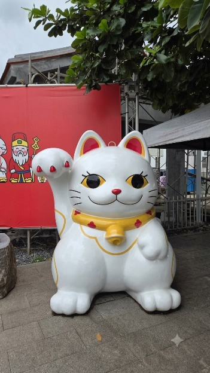
稿件附圖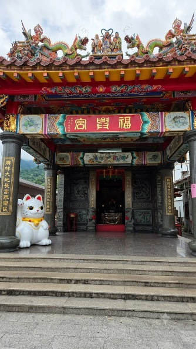
稿件附圖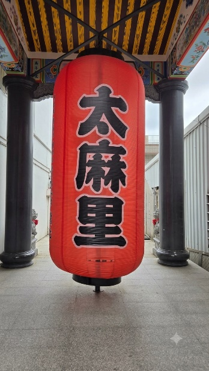
稿件附圖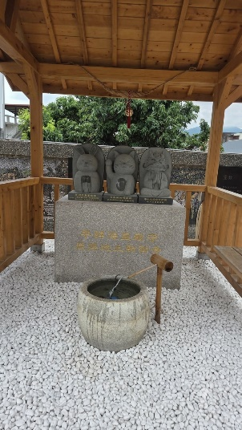
稿件附圖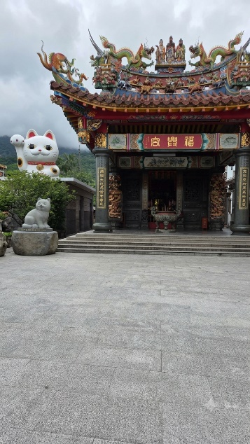
稿件附圖第1組 · 文稿
第1組 · 文稿4｜花蓮浪漫之旅
在觀光署推動的國旅補助方案下，老伴與我「花蓮浪漫之旅」就此拉開序幕。我倆坐在火車上看著窗外遼闊的田園風光，一片片棋盤般整齊劃一的綠色稻田層層遞鋪，讓我們大飽眼福。尤其是花東縱谷，位於中央山脈與海岸山脈之間，長達百餘公里，沿途包括：花蓮與台東的許多知名鄉鎮（如瑞穗、玉里、池上、關山等），整片綠油油的稻田縱橫交錯排列，展現出縱谷平原豐富的農業景緻；另外，田園間散落著各式各樣的平房與特色透天民宅聚落，展現花東地區悠閒寧靜的鄉村生活步調。此外，遠處層疊起伏的雄偉山巒，山頂雲霧繚繞，構成一幅非常恬靜舒心的花東縱谷田園畫卷。隨手一拍都是最經典的東台灣鐵道風景，使我們心情大為舒暢。
在波浪狀屋頂與玻璃帷幕建築的花蓮火車站廣場中央，展示著兩隻具有原住民圖騰特色的紅鴨彩繪公仔裝置藝術（象徵花蓮紅鴨與原鄉文化風格），好像在歡迎我們。之後，騎著腳踏車，漫遊花蓮市區，路邊的美人樹（又稱美人木、絲棉木) 花朵盛開，地上鋪滿落花如粉紅地毯，真是美不勝收。
最後再沿著「花蓮縣兩鐵自行車道導覽圖」所標示的路線，非常安全舒暢地抵達北濱公園。其中園區內設置的極限運動場、沙灘排球場及大型 3D 彩繪等，都是最優良的海濱遊憩區，遊客在此運動或休閒拍照兩相宜。此外，在海灘旁邊，一邊享受著海風輕拂，聆聽浪濤拍岸的聲音，一邊欣賞蔚藍海景及公園的景致，並眺望海灣處的遠山，以及在天空飛翔的海鳥，讓人舒暢與自在。在此，用心地感受太平洋的遼闊與寧靜，令人心胸開闊，就有一股說不出來的喜樂湧上心頭。
下午老伴與我漫遊到花蓮火車站後站出口的富安公園，這裏是運動休閒的綠地。門口的大石球雕塑，由無數塊花蓮特產的大理石與石板堆砌拼貼而成，象徵著花蓮著名的「石頭故鄉」與地質景觀特色；旁邊立著高聳的石牆與柱體，同樣採用了石片拼貼的藝術風格，可說是非常顯眼且極具代表性的大石球與石柱地標藝術創作。
在富安公園內，設置了球場、綠地草坪與運動等設施，是周邊居民與遊客散步休憩的好去處。其中石砌基座上的紅棕色「慈母抱子（母愛）」意象雕像、人物群像與假山池塘造景等，營造出溫馨、祥和且具藝術氣息的綠意空間。此時秋高氣爽，微涼的東北季風，舒適宜人，搭配遠山雲霧，頗有秋日浪漫氛圍，令人陶醉。
這趟老伴與我悠閒與惬意的花蓮之旅，尤其是花東縱谷，沿途這片翠綠隨風起伏的景色，真是讓人百看不厭。此外，東海岸的湛藍海景，總是帶有一種特別撫慰人心的力量，不管是坐在岸邊聆聽浪濤聲，隨意走走，還是什麼都不想地靜靜發呆，都能讓人拋開平日的繁雜，感受到這份難得的寧靜，實在是休閒漫遊的好去處。此時，內心深處的感覺，就如以賽亞書55章12節所述：「山岳岡陵都會在你們面前高興歡呼，田野的樹木都要鼓掌。」最後，我希望能將此趟花蓮浪漫之旅帶入夢鄉，細細品味。
花東縱谷美麗的田園風光
花蓮火車站廣場中央展示的兩隻紅鴨彩繪公仔裝置藝術
花蓮市區的美人樹花朵盛開
花蓮縣兩鐵自行車道導覽圖
北濱公園內的極限運動場景觀
北濱公園內的沙灘排球場景觀
北濱公園內的大型 3D 彩繪景觀
北濱公園蔚藍海景
富安公園門口的大石球雕塑與石柱藝術創作
富安公園內「慈母抱子（母愛）」意象雕像
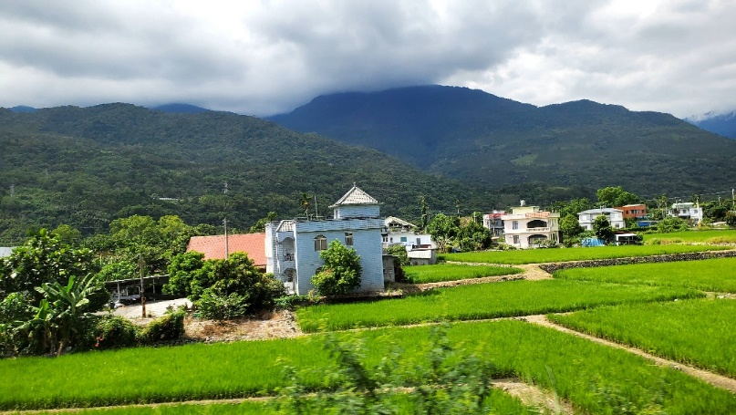
稿件附圖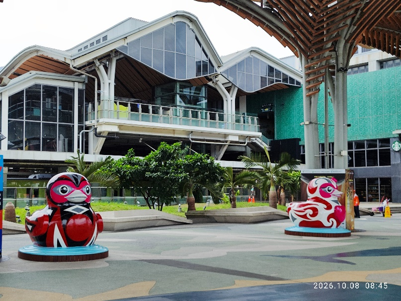
稿件附圖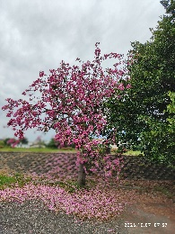
稿件附圖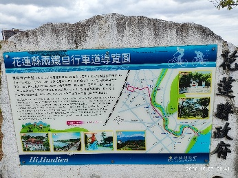
稿件附圖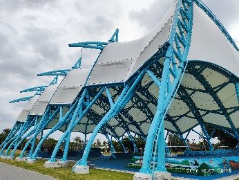
稿件附圖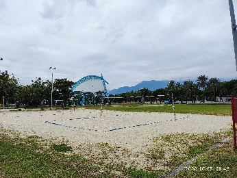
稿件附圖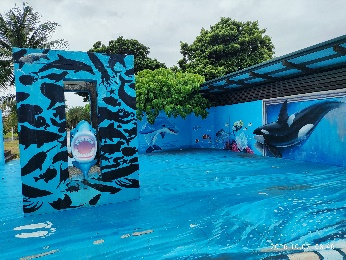
稿件附圖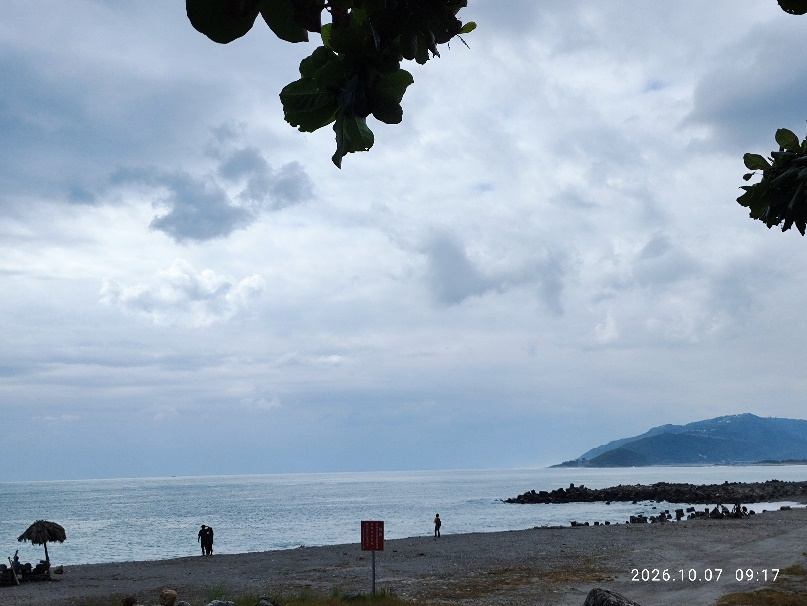
稿件附圖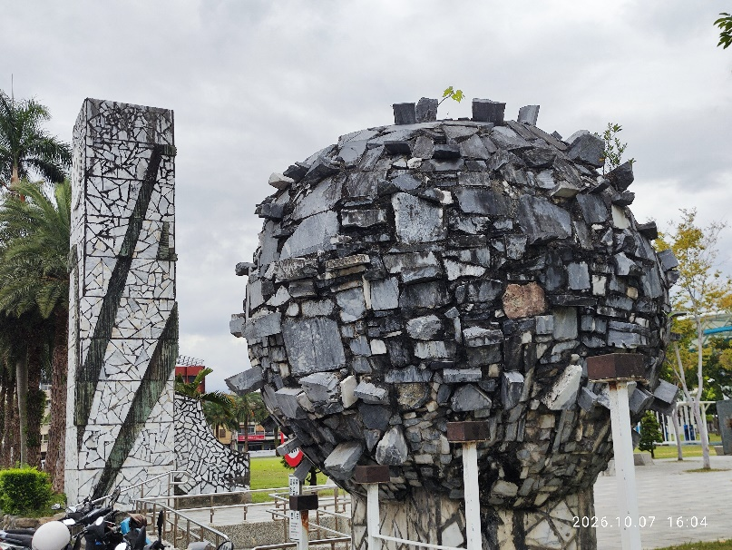
稿件附圖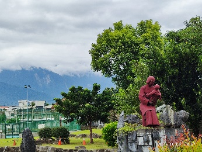
稿件附圖第2組 · 文稿
第2組 · 文稿5｜鹽山主題的藍田公園
近年來，高雄市陸續開發建造十分具有地方特色的公園，全市已有八百多處公園綠地，市府更大手筆大造旗艦版特色公園，楠梓區以鹽山為主題的藍田公園，遊戲與體健設施，全民共享為目的，耗資8600萬元，占地3.45公頃，北高雄社區人口不斷增加，讓市民有一遊樂運動休憩的公園。
藍田公園座落於楠梓區大學與藍田路口，緊臨高雄大學與藍田國小，由於該處曾是下鹽田莊，近年社區不斷興建，人口急速增加，此公園應運而生，改造成高達22項遊樂設施的公園遊戲塲。
北高雄的楠梓區是指標性的繁榮漸進，而藍田生活圈具備交通便利，消費與休閒機能的優勢，藍田公園已成了該區塊最有特色的旗艦版兒童公園，嘉惠高科技電子新貴員工子弟後代歡樂童年，平安長大，更亮眼設施持續引進高科技的優質人才，前途無可限量，指日可待。
藍田公園 親子遊樂場
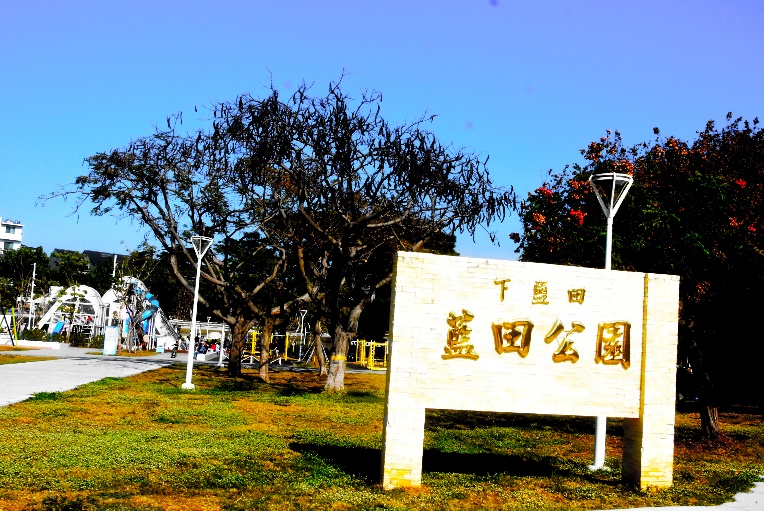
稿件附圖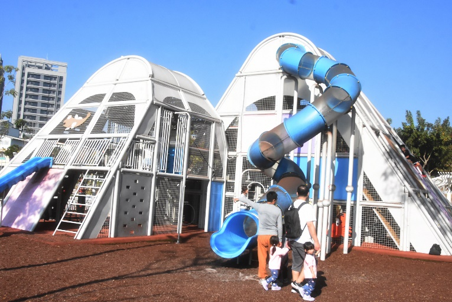
稿件附圖第3組 · 文稿
第3組 · 文稿6｜屏東萬丹泥火山
座落於屏東縣萬丹鄉與新園鄉交界的泥火山，是萬丹鄉和平西路鯉魚山附近，一間廟宇皇源聖殿周遭，泥漿噴出，與斷續火焰，附近田園紅豆栽植，不知何時會噴漿四濺，生死未卜，而成相當奇特景觀，當地農民描述，泥漿或火焰，最高可達兩層樓高，十分的壯觀，相當的恐怖；聰明的農民趕快請來怪手，將田園迅速開挖一條導流，避免噴漿注入田園，保護紅豆等蔬果幼苗，將損害降到最低。
萬丹泥火山的緣由，根據萬丹鄉公所文獻顯示，早在清朝康熙61年(西元1722年)7月11日，鯉魚山附近，發生泥漿噴出，火焰斷續出現，三百多年來，從不間斷噴出，一年好幾次，近年來在每年春節前後，完全沒預兆的上演，噴出的泥漿，就是岩漿和水及天然氣的甲烷，先民認為會有真命天子的出現，早年民智未開，其實不然，哪來的真命天子？泥火山的噴漿，要有四大因素構成：具備有泥岩的地層、而地層要有完備的水源、高壓流體或含有可點燃的甲烷天然氣、地層有裂縫通道等四大因素形成，由於甲烷接觸外界火源或靜電以及自燃驅使，形成熊熊火焰，讓原本冰冷泥漿而成滾熱燙人，長久以來，萬丹鄉住在附近居民早以習以為常，也因此該區塊農田買賣的交割，幾乎是零，由於該處是產業道路，又沒什麼景點可開發為風景區，除了泥火山噴漿場景有好奇遊客外，平日所見，都是當地農民，栽培萬丹十分有名的紅豆耕耘。
依據不同學者調查文獻資料的綜合，目前全臺的泥火山不超過17座，分佈在南部與東部居多，高雄燕巢烏山頂泥火山為全臺規模最大，原貌最完整的噴泥錐景觀，臺南關子嶺水火同源，屏東恆春出水地質公園是火苗而已，但緊密的牡丹鄉，被譽為臺灣版的亞馬遜水上草原，反而喧賓奪主；屏東萬丹泥火山，由於地質環境的使然，位居田園之中，三更半夜或是凌晨破曉時分，泥火山噴漿，擾人清夢的，第一個知道訊息的，往往就是附近皇源聖殿廟宇人員，也因泥火山的噴漿頻傳，提昇不少廟宇的知名度。
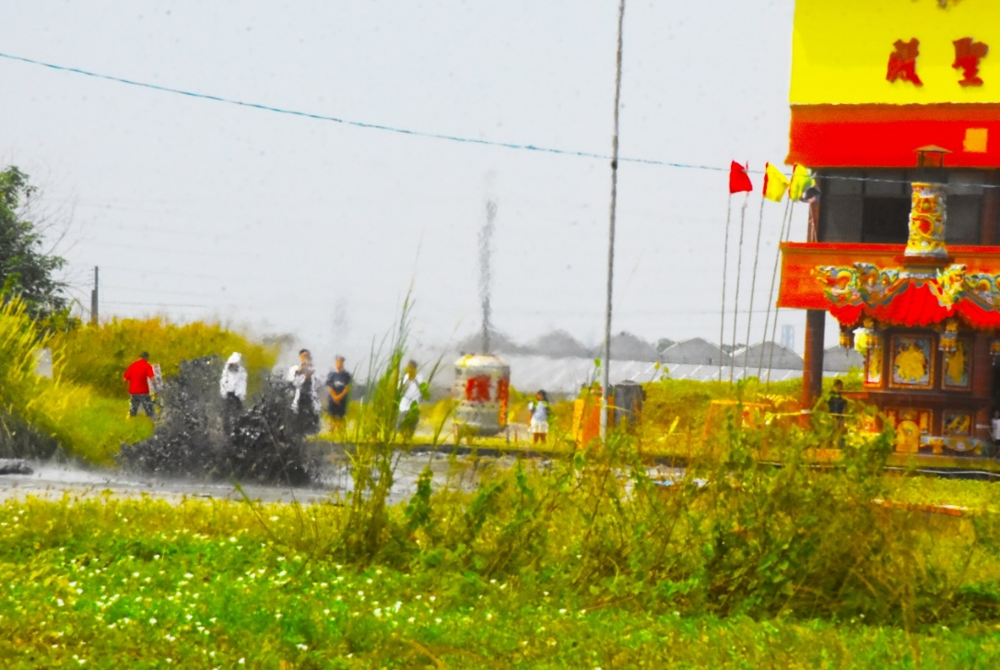
稿件附圖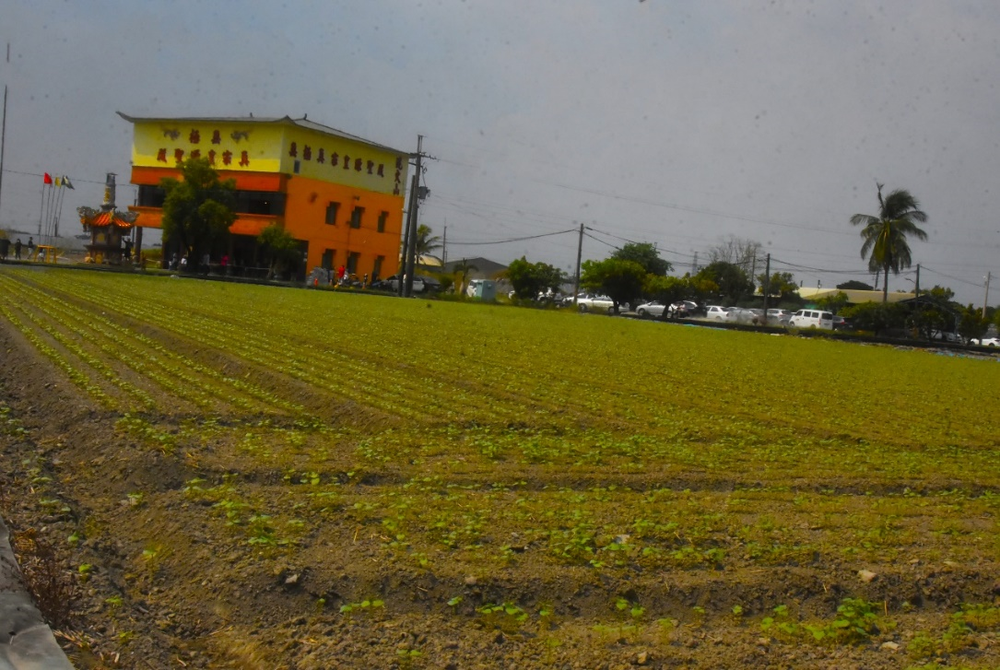
稿件附圖第1組 · 封底
第1組 · 封底1｜全臺最大駁二特區彩虹地景
全臺最大高雄市駁二特區彩虹地景，是一個多元平權為主題的戶外鮮豔地標，緊鄰紅色貨櫃藝術造型，總面積是18mX20m，地面是以12條斜紋色塊所組成，並畫上高雄英文舖陳，相當耀眼，我以數位單眼相機，10mm鏡頭拍攝，表現張力，十分悅目。
回到頁首 ↑第2組 · 封底
第2組 · 封底2｜大港廻聲
高雄市駁二特區大港橋旁公共藝術作品，以音樂銅鈴回應高雄蓬萊商港的轉型，取名大港廻聲，榮獲文化部公共藝術創作獎殊榮。
大港廻聲作品是高雄港務公司在2020年耗資5512萬元，整座重逾680公斤搖擺鐘與37顆銅鐘，高達23米深基樁組合而成，50年代香蕉竹簍載運日本意象，大港廻聲讓大家緬懷當年工業重鎮轉型傳承的象徵，事隔整整六年，遲來的肯定，格外的珍惜。
回到頁首 ↑第3組 · 封底
第3組 · 封底3｜鏡映南院
坐落於嘉義的故宮南院，將東方書法的靈魂巧妙融入現代建築。本體化用「濃墨、飛白、渲染」三種筆意，以流線型的姿態交織出剛柔並濟的輪廓。
本照片拍攝於上午九時的晨光下，微風凝息，無雲的晴空與澄澈的湖面化作一面明鏡。岸上的實體建築與水中的純淨倒影相互凝望，在真實與虛幻之間，勾勒出一幅跨時空的當代水墨，讓人感受清晨的寧靜。
回到頁首 ↑第1組 · 封底
第1組 · 封底4｜至美橋
位於嘉義故宮南院中的至美橋，造型宛如一筆充滿力道的草書，在水面劃出巨龍般的流線。為了保護湖底，這座百米大橋捨棄了橋墩，以單拱姿態輕盈跨越。
挺拔的鋼骨與如鏡的湖水相互輝映，水上是真實的「濃墨」，水下是虛幻的「倒影」。此時，夥伴停下腳步、舉起手機拍照，生動的身影就像水墨畫裡一抹不經意暈開的「渲染」。在虛與實的交界處，巧妙為宏偉的鋼鐵橋樑注入了最靈動的人文溫度。
回到頁首 ↑第2組 · 剪影
第2組 · 剪影1｜紅磚映夜
橫濱紅磚倉庫曾是港口重要的貨物倉庫，如今已轉型為購物、餐飲與文化活動的熱門景點。夜幕下，暖色燈光映照紅磚外牆，古老建築更添迷人風情。
紅磚映著港都夜色， 暖光沿著歲月流淌； 昔日承載港口繁華， 今夜，成為橫濱最美的篇章。
回到頁首 ↑第3組 · 剪影
第3組 · 剪影2｜粉紅清真寺
馬來西亞布城的粉紅清真寺，以柔美的穹頂與高聳的宣禮塔，勾勒出莊嚴而華麗的建築身影。仰望之間，流動的天光為粉色外牆添上一抹夢幻，也映照出建築深沉而神聖的氣韻。
穹頂上細緻繁複的伊斯蘭紋飾，彷彿將信仰寫成一首無聲的詩。那一刻，眼前不只是異國的建築，更是一幅由信仰、光影與天空共同完成的風景。
回到頁首 ↑第1組 · 剪影
第1組 · 剪影3｜朱影深處，願有所歸
千重朱紅，層層向遠方鋪展，
鳥居相疊，將目光引向祈願的深處。
燈影映著歲月，香火守著心願，
每一步，彷彿都走進一段虔誠的時光。
回首，是漫長的朱色長廊；
向前，是藏在盡頭的神明與祈願。
願走過萬重鳥居之後，
心中所念，終有回響，
所願，終有所歸。
回到頁首 ↑第2組 · 剪影
第2組 · 剪影4｜守禮門前的凝望
蒼穹如洗，洗淨歲月風塵，
蔚藍天幕下，朱紅牌樓兀自莊嚴。
那是首里城的門戶，也是歷史的容顏，
雙層重簷，承載著琉球王國的流光與風華。
佇立門前，仰望那「守禮之邦」的牌匾，
心中湧起一股莫名的感動與敬畏。
那是對傳統的堅守，也是對和平的嚮往，
在這樣的午後，與古老文明進行一場心靈對話。
回到頁首 ↑第3組 · 剪影
第3組 · 剪影5｜江南晴空
高塔刺向晴空，
白雲舒展成一場溫柔的夢。
湖水映著城市的光，森林沿著湖畔鋪展，
而童話般的城堡，靜靜藏在碧色之間。
這一刻的首爾，
有摩天的高度，也有湖水的溫柔，
抬頭是萬里晴空，低頭便是一座閃耀的城市。
回到頁首 ↑第1組 · 剪影
第1組 · 剪影6｜神戶港灣暮色
藍色暮光落入海面，
摩天輪點亮港灣的夜，
一盞盞燈火沿著岸邊延伸，
倒映在波光之間，
城市與海，在神戶的黃昏裡，悄悄相逢。
回到頁首 ↑第2組 · 剪影
第2組 · 剪影7｜晴雲為幕，朱門成景
紅色鳥居映著晴藍，
白雲在天際輕輕舒展；
一步一步走下石階，
風掠過樹梢，陽光落在肩上。
抬頭，是一片澄澈的藍，
低頭，是通往神社的路；
那一刻，彷彿整座天空，
都在眼前與我相遇。
回到頁首 ↑第3組 · 剪影
第3組 · 剪影8｜藏王雪行
踏進藏王的雪國，
白雪覆滿山林，枝椏披上一層銀霜。
一列鮮紅的列車停在雪地之間，
像冬日裡燃起的一抹暖色，
而我站在漫天雪光裡，
親眼遇見了山形最浪漫的冬天。
回到頁首 ↑第1組 · 剪影
第1組 · 剪影9｜凝眸
琥珀色的眼，
藏著夜的深邃，
橘色身影融進微光之間。
一眼回望，
像是與人交換了一場無聲的溫柔。
回到頁首 ↑第2組 · 剪影
第2組 · 剪影10｜日本福島第一只見川橋梁
冬天把山巒染成一片寂靜，
只見川沿著谷底緩緩流過，
鐵橋橫在雪色與蕭瑟之間，
沒有列車經過，只有風穿過橋身，留下細微的聲響。
我站在遠處等待，目光一次次投向鐵道的盡頭，
期待列車從山林深處緩緩出現，
為沉默的冬日添上一抹流動的色彩。
回到頁首 ↑第3組 · 剪影
第3組 · 剪影11｜釣魚
水面尚平，
像一頁還沒寫完的稿紙。
我把線拋出去，
不是為了抓住什麼，
只是讓等待有個方向。
浮標輕輕晃動，
像心裡那些微小的念頭，時有時無。
風慢慢吹過，時間也變慢，
帶走急促，也帶走聲音。
魚有沒有來過，誰也不知道。
遊蕩在我們之間的，只剩寧靜。
回到頁首 ↑第1組 · 剪影
第1組 · 剪影12｜塔映東京
夜色落在東京的天際，
鐵塔亮起溫暖的燈光。
眼前橋影緩緩延伸，車流穿梭其間，
抬頭是塔，低頭是光，
而我站在這座城市的夜裡，
看見東京最動人的一刻。
回到頁首 ↑第2組 · 剪影
第2組 · 剪影13｜懸崖邊的樓梯
西洞尾燈塔位於望安島的西北角，早期居民在西洞尾海岬上建造的一座燈塔，目前已不再使用，天氣晴朗時可360度遠眺海面、礁岩與漁港景色，成為探訪秘境旅人的私房景點。
回到頁首 ↑第3組 · 剪影
第3組 · 剪影14｜網垵口沙灘
網垵口沙灘位於望安島南端貝殼砂灘潔淨而無汙染，擁有細白的沙質、清澈的海水，一公里長的沙灘與湛藍的天際及海水相映成畫。5~10月夜間完全禁止進入沙灘，且嚴禁使用手電筒照射沙面，以免驚擾產卵的綠蠵龜。
回到頁首 ↑第1組 · 剪影
第1組 · 剪影15｜綠蠵龜涼亭
澎湖望安是台灣重要的綠蠵龜產卵棲地之一，故在土地公漁港旁設有一座高約4公尺、長約8公尺的巨大綠蠵龜造型涼亭，結合了遮蔭功能與休憩石椅，象徵「望而心安」。
稿件附圖
回到頁首 ↑第2組 · 剪影
第2組 · 剪影16｜望安第一高峰
澎湖望安島的「天台山」是島上地勢最高的地方，海拔53公尺，位置得天獨厚，登上山頂可遠眺花嶼、小貓嶼與台灣海峽，山頂有一塊風化侵蝕的玄武岩，表面形成貌似巨人腳印的凹洞，相傳是仙人呂洞賓在此留下足跡。
稿件附圖
回到頁首 ↑第3組 · 剪影
第3組 · 剪影17｜哈密瓜車站
澎湖白沙鄉後寮村是澎湖重要的瓜果產地，為推廣在地特色，打造結合哈蜜瓜、洋香瓜造型的候車亭，提供遊憩、拍照、遮陽、避雨之候車環境。
回到頁首 ↑第1組 · 剪影
第1組 · 剪影18｜小臺灣
澎湖縣七美嶼知名景點，玄武岩平台因長年受到海浪侵蝕，勾勒出宛如臺灣本島輪廓的形狀。對旅人而言，站在離島遠望這塊「縮小版臺灣」，彷彿象徵著離島與本島之間的情感連結。
回到頁首 ↑第2組 · 剪影
第2組 · 剪影19｜福爾摩沙
無邊際的天，深不可測的海， 我好似孤島坐落在世界的一角，藍天白雲相擁，海風環環圍繞，島上滿腔的熱情，讓我擁有無限勇氣，面對每一個挑戰。
回到頁首 ↑第3組 · 剪影
第3組 · 剪影20｜樹根奇景
高雄市蓮池潭附近有棵老榕樹，樹根盤根雜生，包覆在水泥水岸底下與水共存，形成相當奇特的樹根景觀，被國外遊客上網而吸腈，引來250萬人瀏覽，一夕爆紅，由於該處正是人行道拓寬工程的位置，樹根保護與否的論戰，官員與護樹民間團體、專家、學者、民意代表的意見紛紛，最後達成不拓寬人行道，保留樹根景觀的共識。
回到頁首 ↑第1組 · 剪影
第1組 · 剪影21｜高雄熱氣球
英國泰晤士報評鑑高雄為國際最適合秋季旅遊城市選項，民國115年雙十國慶連假，高雄市政府將熱氣球在田寮月世界活動兩週，造次八萬多人轟動場面，移師高雄愛河，兩顆熱氣球與高雄熊及遊艇，夕陽西下，海天一色，十分美麗，萬分吸睛，讓遊客流連忘返。
稿件附圖
回到頁首 ↑第2組 · 剪影
第2組 · 剪影22｜雪映古村
白雪覆上合掌屋頂，層層山巒隱入冬日雲煙。屋前池水映著蒼茫天色，枝影與雪景交織成一幅靜美的畫卷。當我駐足於此，彷彿走進歲月珍藏的故鄉，聽見寒冬無聲，感受古村在風雪之中，依然溫柔而堅定地守候著時光。
回到頁首 ↑第3組 · 剪影
第3組 · 剪影23｜穗花棋盤腳
穗花棋盤腳（又稱為水茄苳），學名為 Barringtonia racemosa。喜歡生長在水邊或濕地環境的景觀樹種，是台灣相當珍貴且具特色的原生親水性植物。
清晨在衛武營公園湖畔，捕捉到剛好還掛在枝頭上的花朵，宛如稻穗般一串串懸垂的花序，長長的花梗垂掛而下，上面帶有許多花苞與剛綻開的粉紅色花朵，擁有細緻絲狀的花絲，葉片濃綠光亮，實在非常優美，令人心曠神怡。
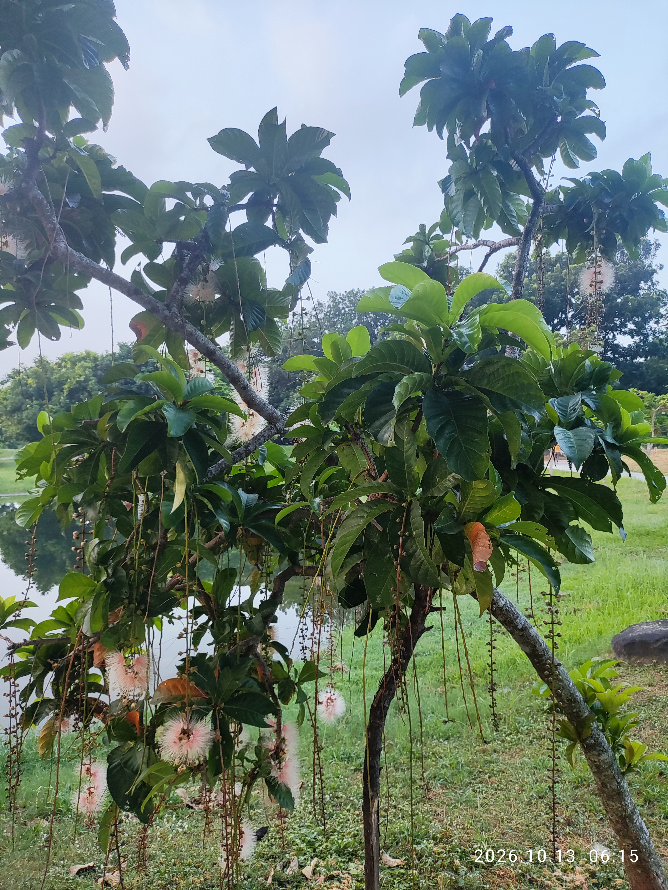
稿件附圖稿件附圖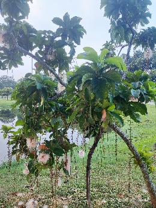
稿件附圖第1組 · 剪影
第1組 · 剪影24｜海天一線
橫濱的海，將一整片湛藍鋪展至天際，白色的港灣大橋，如一行寫在海上的詩，承接著遠方，也牽引著目光。
浪花在腳邊低語，雲朵在天空盛放，海風越過橋身，彷彿把城市的故事，輕輕送往看不見的彼岸。
回到頁首 ↑第2組 · 詩詞
第2組 · 詩詞1｜《逆光之翼》
黑色的羽翼
從鋼鐵與陽光之間
突然醒來。
它不飛——
只是把天空
折成自己的方向。
風經過
留下鋒利的弧線；
光穿過羽尖，
像一場沉默的重生。
不必飛向遠方，
站在光裡，
就是翱翔。
回到頁首 ↑第3組 · 詩詞
第3組 · 詩詞2｜《反差》
一片柔軟的草地，
托著一顆
冰冷的金屬心臟。
天空很安靜，
它卻像一枚
正在爆炸的螺旋。
白，是風。
銀，是刀。
綠，是沉默。
城市向前，
雕塑卻逆著時間——
一邊生長，
一邊腐蝕。
而我們站在中間，
渺小得
像一個
不敢停止的句號。
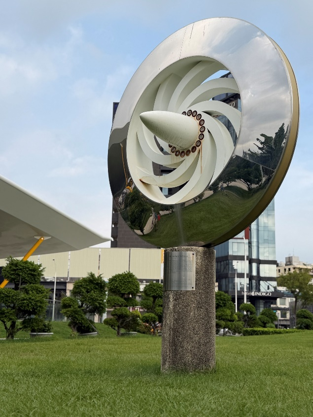
稿件附圖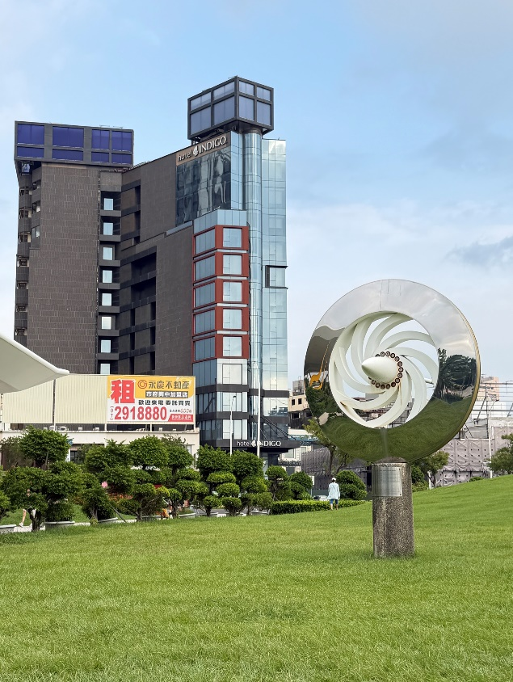
稿件附圖第1組 · 詩詞
第1組 · 詩詞3｜樂園
在熟悉的回眸中醒來
妳就在眼前 這不是夢
妳活生生出現在我眼角
就在轉角不遠處 我遇到妳 遇到了愛
從去年夏天到今天秋天
我思念著妳
妳的笑容 妳的和藹
我怕腦海中的錄音機
哪一天會忘記妳的聲音
日日夜夜 夜夜日日
妳在我心裡
我們緊緊擁抱
那一刻眼淚傾盆而出
親愛的Rose 我的德國媽媽
妳終於又回到我的身邊
我們再次走到妳在德國栽種的
萊茵玫瑰園
我摘下一朵初夏玫瑰
再次別妳髮上
妳為我別玫瑰於髮之際
我們都哭了
想念太難熬
然而我們終於等到
樂園
永永遠遠
萬世不變
回到頁首 ↑第2組 · 詩詞
第2組 · 詩詞4｜隔離
你的溫柔
寵壞了我
我不可能跟你
只做普通朋友
可是你用道歉推開了我
我只能在窗外看著你
遲遲不飛走
心疼自己淋濕的翅膀
在這名為愛你的雨中
無力解脫
如月光般療癒的你
被調成永晝模式
我開啟與太陽親近的距離
一蝶本身就有兩翅
沒有你的視界
我也能飛行無垠
稿件附圖
回到頁首 ↑第3組 · 詩詞
第3組 · 詩詞5｜巴多 巴多 巴多 巴多
那秋季夜裡 蛙鳴傳來陣陣
巴多 巴多 巴多 巴多
我轉眼望向池塘
四隻青蛙呆呆傻傻癡癡靜靜望著我
在剛滿四十歲的那晚 我愣住了
一隻十歲青蛙天真可愛
像一歲小貓懵懂
開心望著世界
第二隻青蛙
似乎有二十歲了
想要跳出池塘
後腿振翅跳躍
想要高飛
第三隻而立青蛙
悠閒著時光
午夜三刻鐘
最後一只蛙
她的巴多像在彈古董鋼琴
律著弦 綠著閒
自在氛圍 芬多精著我
池塘樂音生態池
人生中年女子
感激四隻蛙
嫩綠 淺綠 墨綠 深綠
人生四景 人生四境
巴多 巴多 巴多 巴多
稿件附圖
回到頁首 ↑第1組 · 親子園地
第1組 · 親子園地1｜左營拱辰門-兵臨城下 (國小二年級)
稿件附圖
回到頁首 ↑第2組 · 親子園地
第2組 · 親子園地2｜端午節 (國小一年級)
稿件附圖
回到頁首 ↑第3組 · 親子園地
第3組 · 親子園地3｜中秋烤肉 (國小一年級)
稿件附圖
回到頁首 ↑第1組 · 親子園地
第1組 · 親子園地4｜中秋家人烤肉趣 (國小三年級)
稿件附圖
回到頁首 ↑第2組 · 親子園地
第2組 · 親子園地5｜魔幻空間 (國中三年級)
稿件附圖
回到頁首 ↑第3組 · 親子園地
第3組 · 親子園地6｜巨藻守護者-海獺先生 (國小一年級)
稿件附圖
回到頁首 ↑第1組 · 親子園地
第1組 · 親子園地7｜中秋節快樂-月圓人團圓 (國小三年級)
稿件附圖
回到頁首 ↑第2組 · 親子園地
第2組 · 親子園地8｜夜海中的小燈塔 (國小四年級))
稿件附圖
回到頁首 ↑第3組 · 親子園地
第3組 · 親子園地9｜小精靈與我 (國小一年級)
稿件附圖
回到頁首 ↑